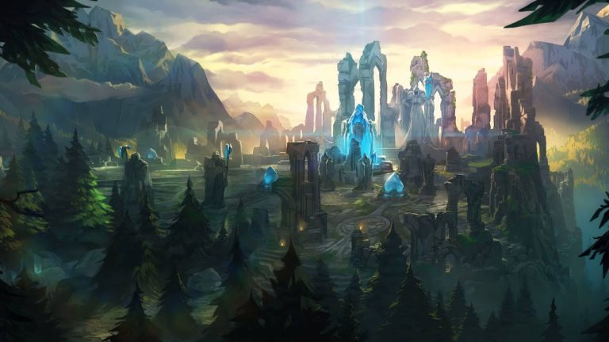
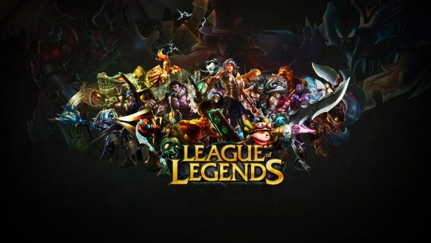
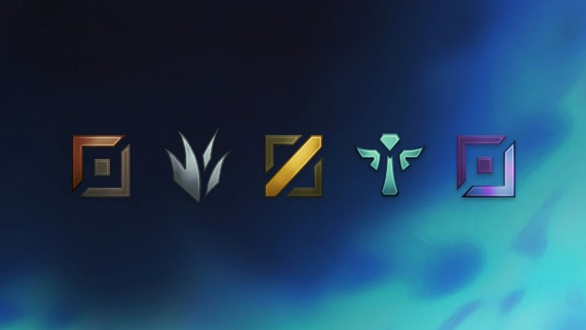

Summoner Rift

Summoner's Rift is a magical battlefield. In Runeterra Legacy, it was the most venerated Field of Justice used by the Institute of War and the League of Legends. In Institute of War it is an area with remnants of a battle between two competing Empires.
Summoner's Rift is also used as the main gameplay map for League of Legends and Wild Rift.
Champions

Champions are the player-controlled characters in League of Legends. Each champion possesses unique abilities and attributes.
Champions are categorized into several different categories defined by their standard roles in the game and other relevant traits.
Almost all champions will have an innate ability, 3 basic abilities, and an ultimate one.
Roles

We've covered the basic definition of roles and how to play each in League of Legends: Top, Jungle, Mid, Bot, and Support.
Top Lane
Split pushers exist in side lanes, attempting to capitalize on their dueling power to do one of two things. If left 1v1, they ideally are able to overpower any champion for a kill. If they draw more than one enemy, the rest of the split pusher's team can force an objective. Split pushers rarely look to group up, only showing up if they can clean up kills after a fight has started.
Mid Lane
Traditionally, you see magic damage coming from the mid lane, so these picks are often compensated with magic damage elsewhere in the composition. AD assassins look to take advantage of squishy champions with low mobility in the mid lane to try to find kills early and roam.
Jungle
These champions have the same general play pattern as top lane split pushers. Instead of trying to survive laning phase, they power farm their jungle early. Laners have to be careful early as split push junglers often do not have an early influence on the game.
Bot Lane
Hyperscaling ADCs get disproportionately stronger as they get items. They have glaring weaknesses in the early game that are exploitable during the lane phase — notably lack of range. However if they make it to the late game and get proper peel, their damage output is unrivaled.
Support
Enchanters exist to heal, shield, and buff up their teammates. They often do well in laning phase because they are ranged and add good sustain to their carries. Enchanters often struggle against hard engage if focused, despite their peeling abilities. They focus on building items that further buff their carries, like Ardent Censer.